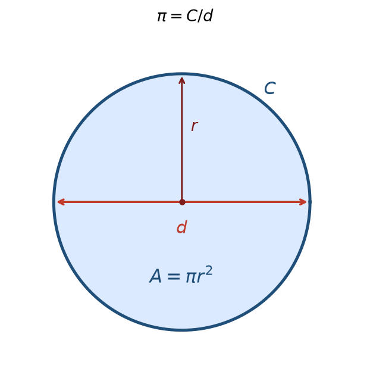
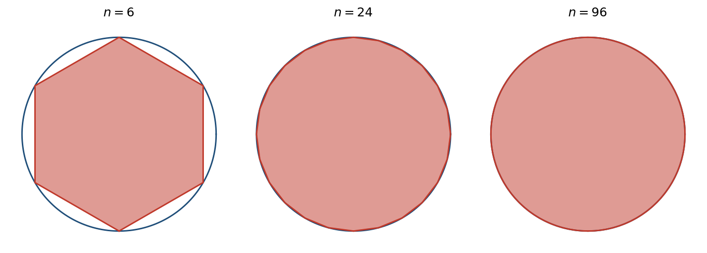
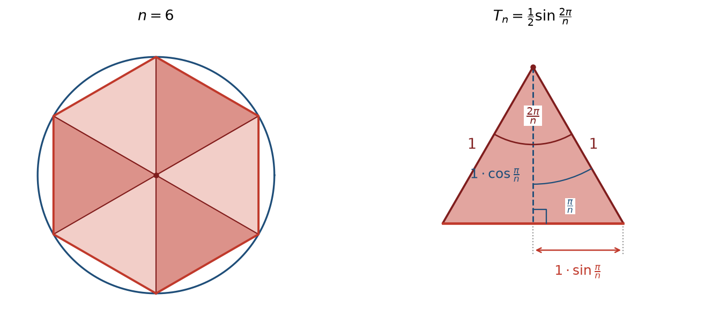
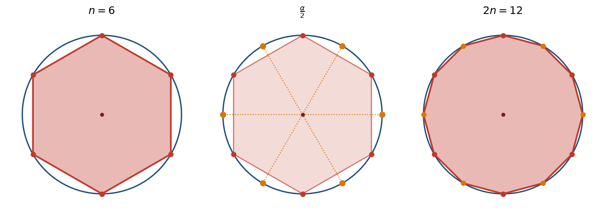
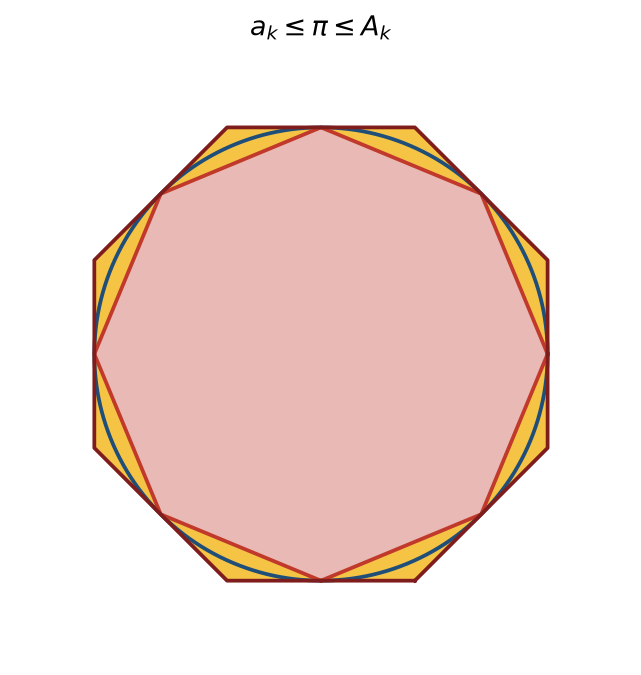
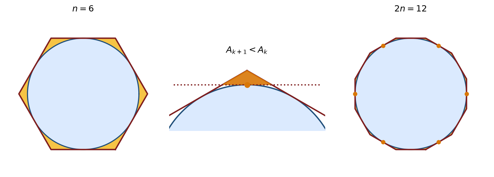
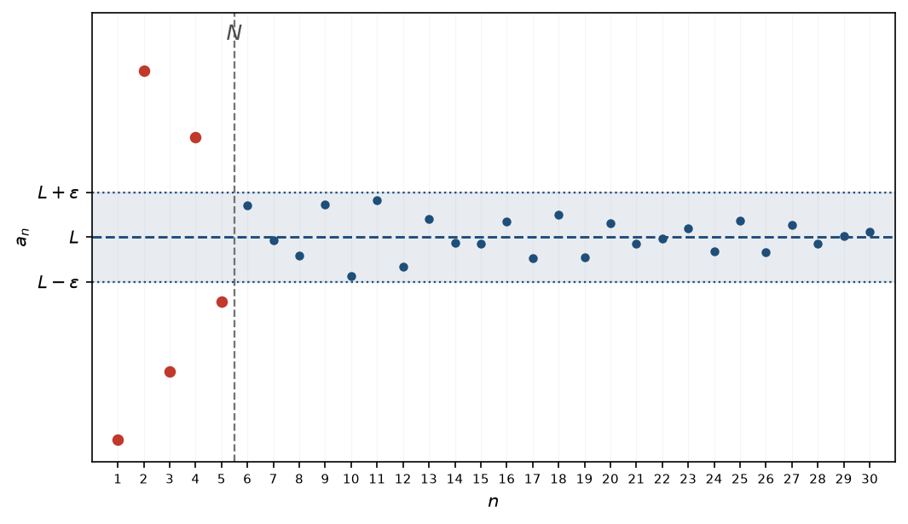

7 גבול של סדרה
7.2 גבול של סדרה: מוטיבציה ואינטואיציה
בפועל, כשאנחנו עובדים עם מספרים, לעיתים קרובות איננו עובדים עם הערך המדויק אלא עם ערך ש״קרוב מספיק״ אליו. הדוגמה הפשוטה ביותר היא כתיבת \(0.3333\) במקום \(\frac{1}{3}\): אלה אינם אותו מספר, אבל לרוב הצרכים ההבדל ביניהם אינו משנה. כך גם כשכותבים \(1.41\) במקום \(\sqrt{2}\).
אבל מה פירוש ״קרוב״? כל עוד לא צירפנו לביטוי הזה מספר, אין בו טענה מתמטית. לכן קובעים מראש את השגיאה שאנחנו מוכנים לסבול, ומסמנים אותה \(\varepsilon>0\) (״אפסילון״). נאמר ש-\(x\) מקרב את \(L\) ברמת דיוק \(\varepsilon\) אם המרחק בין \(x\) ל-\(L\) קטן מ-\(\varepsilon\).
והמרחק בין שני מספרים על הישר כבר מוכר לנו: הוא הערך המוחלט של ההפרש ביניהם. כלומר, התנאי הוא \[|x - L| < \varepsilon\] ושימו לב שהמרחק אינו תלוי בסדר, שכן \(|x - L| = |L - x|\). וזה הגיוני: לא מעניין אותנו אם \(x\) גדול מ-\(L\) או קטן ממנו, אלא רק כמה הוא רחוק ממנו. למשל, \(0.3333\) קטן מ-\(\frac{1}{3}\) ואילו \(0.3334\) גדול ממנו — ושניהם מקרבים אותו ברמת דיוק \(0.001\).
את אותו תנאי אפשר לרשום גם בלי ערך מוחלט, ואז מתקבלת תמונה גאומטרית: \[|x - L| < \varepsilon \iff -\varepsilon < x - L < \varepsilon \iff L - \varepsilon < x < L + \varepsilon\] כלומר \(x\) נמצא בקטע הפתוח \((L-\varepsilon,\ L+\varepsilon)\), קטע שמרכזו \(L\) ורוחבו \(2\varepsilon\). זוהי בדיוק סביבת ה-\(\varepsilon\) של \(L\) שראינו בפרק על הערך המוחלט. שתי הצורות שקולות לחלוטין, ונעבור ביניהן בחופשיות: הראשונה היא טענה על השגיאה — גודל אחד, המרחק, החסום על ידי מספר אחד; השנייה היא טענה על מקומו של \(x\) על הישר.

ועכשיו לנקודה שממנה מתחיל הפרק: רמת הדיוק אינה נתונה לנו מראש — היא נקבעת על ידי מי שדורש את הקירוב, ומספר בודד אינו יכול לעמוד בכל דרישה. \(0.3333\) אמנם מקרב את \(\frac{1}{3}\) ברמת דיוק \(0.0001\), אך ברמת דיוק \(0.00001\) הוא כבר אינו מספיק ובמקומו נדרש \(0.33333\); ברמת דיוק קטנה עוד יותר יידרש מספר אחר, וכך הלאה. שום שבר עשרוני סופי אינו עונה על כל הדרישות. היחיד שהיה עונה עליהן הוא \(\frac{1}{3}\) עצמו — ואותו איננו יודעים לרשום כשבר עשרוני סופי, וזו כל הסיבה שאנחנו מקרבים מלכתחילה.
לכן, בהינתן מספר שאיננו יודעים לרשום או לחשב במדויק, מה שדרוש לנו אינו מספר בודד אלא שיטה: דרך אמינה לייצר קירוב לכל רמת דיוק שתידרש. אחת השיטות היא לבנות סדרה שאיבריה קלים לחישוב, המקיימת את התכונה הבאה: לכל רמת דיוק \(\varepsilon>0\), קטנה ככל שתהיה, קיים אינדקס שהחל ממנו ואילך כל איברי הסדרה מקרבים את המספר ברמת דיוק \(\varepsilon\).
שימו לב לשני דברים. ראשית, אין כאן דרישה שהסדרה תתקרב בהתמדה: מותר לאיברים לעלות ולרדת ואף להתרחק לפרקים — הנדרש הוא רק שבסופו של דבר כולם ייכנסו לתחום ויישארו בו. שנית, זו הסיבה שאנחנו דורשים שכל האיברים מן האינדקס והלאה יהיו קרובים ולא רק אחד מהם: איבר בודד שיצא קרוב במקרה אינו מועיל, שכן ייתכן שמיד אחריו הסדרה מתרחקת שוב. כשכל האיברים מן האינדקס והלאה קרובים מספיק, אפשר לעצור בכל אחד מהם ולקחת אותו כקירוב.
עד כאן הלכנו בכיוון אחד: המספר היה הנתון, והסדרה הייתה הכלי שבנינו כדי להגיע אליו.
אבל אפשר לקרוא את הקשר הזה גם בכיוון ההפוך, ואז מתקבלת שאלה חדשה: הסדרה היא הנתון, והשאלה היא מה היא מקרבת — אם בכלל. האם קיים מספר שהסדרה מתקרבת אליו במובן שתיארנו? האם היא מתייצבת?
המקרה הברור ביותר הוא זה שכבר עמדנו בו. רצינו לקרב מספר, הגדרנו סדרה שלכאורה עושה את העבודה — ומניין לנו שאכן כך? אין די בכך שהסדרה ״נראית מתקרבת״: כדי שהקירוב יהיה לגיטימי עלינו לדעת שהיא באמת מקיימת את שדרשנו, כלומר שלכל רמת דיוק אכן קיים אינדקס שהחל ממנו כל האיברים מקרבים את המספר ברמת הדיוק הזו. זו בדיוק העבודה שנעשה בהמשך הסעיף עבור \(\pi\).
ולעיתים הסדרה אינה נבנית על ידינו כלל, אלא יוצאת מתוך תהליך: \(a_n\) הוא התוצאה המתקבלת כאשר הפרמטר הוא \(n\), ודווקא המספר הוא מה שאין לנו. למשל, נניח ש-\(a_n\) הוא הזמן הדרוש לבניית בית על ידי \(n\) פועלים. ככל שנוסיף פועלים הזמן יילך ויקטן — אך לא לאפס, שכן יש חלק מהעבודה שאי אפשר לחלק ביניהם. הזמן מתייצב על ערך מסוים: הזמן המהיר ביותר שבו אפשר לבנות את הבית בכלל. את הערך הזה איננו יודעים מראש, אבל עצם הידיעה שהוא קיים מעשית מאוד — מרגע שאנחנו ״מספיק קרובים״ אליו, כבר אין טעם להוסיף פועלים.
דוגמה עדכנית יותר היא אימון של מודל בלמידת מכונה. למודל יש פרמטרים, ויש להם ערך שבו הוא מתפקד בצורה הטובה ביותר; תהליך האימון מייצר סדרה של ערכים — אחד לכל שלב אימון. האם הסדרה הזו מתקרבת אל הערך האופטימלי? והאם היא בכלל מתייצבת על משהו? אלו שאלות אמיתיות, ולא כל אימון עונה עליהן בחיוב.
שכן לא כל תהליך מתייצב, וכדאי לראות זאת מיד. קחו סדרה שמתנהגת כך: \[1,\ 2,\ 3,\ 1,\ 2,\ 1,\ 2,\ 3,\ 1,\ 2,\ \dots\] היא אינה בורחת לאינסוף — כל איבריה בין \(1\) ל-\(3\), וגם אינה מתקרבת לשום מספר. היא פשוט רודפת אחר זנבה: חוזרת שוב ושוב על אותם ערכים, ולעולם אינה מתיישבת על אחד מהם.
דוגמה יומיומית לאותו כשל: מרצה כותב על הלוח באותיות קטנות מדי. מבקשים ממנו לכתוב גדול יותר — והוא מצייר אותיות בגובה חצי לוח. מבקשים קטן יותר — ושוב זעיר. הגודל קופץ מקצה לקצה ואינו מתקרב לשום גודל, ולעולם לא נגיע לגודל הרצוי ולא נוכל לעצור. שימו לב מדוע: הבקשה ״גדול יותר״ אינה נושאת עמה שום רמת דיוק. כל עוד צורת הבקשה אינה משתנה, אין לנו כלל קריטריון שיאמר לנו מתי הגענו — וזו בדיוק הסיבה שקבענו מראש את \(\varepsilon\).
הערה 7.2.1 — אותו רעיון, בהקשרים רבים.
השאלה שבכיוון השני — ״האם הסדרה מתייצבת?״ — היא למעשה השאלה שתעסיק אותנו בכל הפרק: האם הסדרה מתכנסת. המצבים שבהם היא עולה אינם ניתנים למניין, והם מופיעים כמעט בכל תחום שבו מופיעות סדרות של מספרים — בשאלות מעשיות ובשאלות תאורטיות כאחד.
מה שמשותף לכולם הוא הגרעין: האם קיים מספר שהסדרה מתקרבת אליו באופן שתיארנו? את השאלה הזו, ואת ההגדרה המדויקת שמאחוריה, ננסח בסעיף הבא.
קירוב המספר \(\pi\)
על מנת להמחיש ולהעמיק את הרעיון הקודם, ניתן דוגמה מפורטת יותר.
המספר \(\pi\) הוא היחס בין היקף המעגל לקוטר שלו. כמו כן, ידועה לנו הנוסחה מהתיכון \(A=\pi r^2\), כאשר \(A\) הוא שטח העיגול ו-\(r\) הוא רדיוס המעגל. מפני שהמעגל הוא אחת הצורות הגאומטריות הנפוצות, \(\pi\) מופיע באופן טבעי בהרבה מקומות, והיינו רוצים לדעת את הערך שלו. אנחנו ננסה לפתח שיטה לחשב אותו.
הדוגמה שבחרנו בה אינה מלאכותית. המעגל הוא אחת הצורות הנפוצות ביותר, ולכן \(\pi\) נדרש כמעט בכל חישוב הנדסי שבו מופיע עיגול, גליל או כדור — ובמשך רוב ההיסטוריה לא הייתה שום דרך פשוטה להשיג אותו. מי שנזקק לערכו היה תלוי בשיטת קירוב, בעצמו או דרך טבלאות שחיברו אחרים; השאלה ״כיצד מקרבים את \(\pi\)?״ הייתה שאלה מעשית, לא תרגיל.
היום המצב הפוך, ודווקא בזכות זה הדוגמה נוחה: כל מחשבון נותן את \(\pi\) בדיוק של עשרות ספרות בשבריר שנייה. כלומר את התשובה אנחנו כבר יודעים — ולכן נוכל לבדוק בכל שלב אם השיטה שאנחנו בונים אכן עובדת.

שימו לב ש-\(\pi\) הוא יחס, ולכן אינו תלוי בגודל המעגל: מעגל גדול ומעגל קטן נותנים בדיוק את אותו מספר. לכן מותר לנו לבחור לחישוב את המעגל הנוח ביותר, ונבחר את זה שרדיוסו \(1\). הבחירה משתלמת במיוחד: לפי \(A = \pi r^2\), שטח העיגול שרדיוסו \(1\) הוא בדיוק \(\pi\). כלומר, במקום למדוד את היחס בין ההיקף לקוטר, די לנו לחשב את השטח של עיגול היחידה.
אלא שמהגדרת המספר לא ברור כלל כיצד לחשב את ערכו: ההגדרה אומרת לנו מהו \(\pi\), אך אינה נותנת שום דרך למצוא אותו. שימו לב שאין זו בעיה של ייצוג בלבד — גם אילו היה \(\pi\) מספר רציונלי, עדיין לא היה ברור מן ההגדרה כיצד למצוא את השבר המתאים. (למעשה \(\pi\) הוא אי-רציונלי, ולכן ממילא אי אפשר לכתוב אותו כשבר — אך עובדה זו לא תוכח כאן, ואיננו זקוקים לה.) לכן נתחיל מהמקום היחיד שאפשר להתחיל ממנו: ננסה לפתח שיטה שתאפשר לנו לקרב אותו, בדיוק טוב כרצוננו.
הרעיון: מצולע עם הרבה צלעות דומה למעגל
איך נעשה את זה? נשים לב, שמצולע משוכלל עם מספיק צלעות הוא ״כמעט״ מעגל ומצד שני את השטח שלו יחסית קל לחשב.
התרשים הבא מראה עד כמה זה עובד. במשושה עוד רואים בבירור שש צלעות; במצולע בעל \(24\) צלעות ההבדל מן המעגל כבר קשה לאיתור, ובבעל \(96\) צלעות העין אינה מבחינה ביניהם כלל.

ומצד שני — וזה מה שהופך את הרעיון לשימושי — את שטח המצולע אנחנו יודעים לחשב במדויק בכל שלב, גם כאשר הוא כבר ״נראה כמו מעגל״, ובנוסחה פשוטה: שטחו \(S_n\) של מצולע משוכלל בעל \(n\) צלעות החסום במעגל שרדיוסו \(1\) הוא \[.S_n = \frac{n}{2}\,\sin\frac{2\pi}{n}\] ולכן הוא מועמד טוב לקירוב שטחו של העיגול, שהוא \(\pi\).
פירוט: חישוב שטח המצולע
נתבונן במצולע משוכלל בעל \(n\) צלעות החסום במעגל שרדיוסו \(1\), ונחשב את שטחו. לשם כך נחבר את מרכז המעגל לכל אחד מקודקודי המצולע: המצולע מתחלק ל-\(n\) משולשים חופפים, ולכל אחד מהם שתי צלעות שאורכן \(1\) (שני רדיוסים) — כלומר הם משולשים שווי שוקיים — וזווית הראש שלהם היא \(\frac{2\pi}{n}\).

נחשב את שטחו של משולש כזה לפי בסיס כפול גובה חלקי שתיים. מן התרשים: הגובה מן המרכז אל הבסיס הוא \(\cos\frac{\pi}{n}\), מחצית הבסיס היא \(\sin\frac{\pi}{n}\), ולכן הבסיס כולו הוא \(2\sin\frac{\pi}{n}\). נסמן ב-\(T_n\) את שטחו של משולש כזה. מכאן \[T_n = \frac{1}{2}\cdot 2\sin\frac{\pi}{n}\cdot\cos\frac{\pi}{n} = \sin\frac{\pi}{n}\,\cos\frac{\pi}{n}\] ולפי נוסחת הזווית הכפולה, \(\sin 2\alpha = 2\sin\alpha\cos\alpha\), נציב \(\alpha = \frac{\pi}{n}\) ונקבל \[.T_n = \frac{1}{2}\sin\frac{2\pi}{n}\] יש \(n\) משולשים חופפים כאלה, ולכן \[.S_n = n\,T_n = \frac{n}{2}\,\sin\frac{2\pi}{n}\]
נבדוק את הנוסחה על המקרה הפשוט ביותר, המשושה. כאשר \(n = 6\) אורך הצלע שווה בדיוק לרדיוס, ולכן ששת המשולשים הם דווקא שווי צלעות בעלי צלע \(1\); שטחו של משולש כזה הוא \(\frac{\sqrt{3}}{4}\), ובסך הכול \(6\cdot\frac{\sqrt{3}}{4} = \frac{3\sqrt{3}}{2}\). ואכן, הצבה בנוסחה נותנת \(\frac{6}{2}\sin\frac{\pi}{3} = \frac{3\sqrt{3}}{2} \approx 2.598\), אותו ערך בדיוק.
התהליך: הכפלת מספר הצלעות
לכאורה לא הרווחנו הרבה: במקום לחשב את \(\pi\) עלינו כעת לחשב את \(\sin\frac{2\pi}{n}\), וגם זו אינה בעיה קלה יותר. אלא שכאן נכנס רעיון יפה. נניח שכבר חישבנו את המצולע בעל \(n\) הצלעות, ונסמן את אמצע כל קשת שבין שני קודקודים סמוכים. הנקודות החדשות הללו, יחד עם הקודקודים הישנים, הן קודקודיו של מצולע משוכלל בעל \(2n\) צלעות — שזווית הראש שלו היא בדיוק מחצית מזו של קודמו.

וככל ש-\(n\) גדל, השטח שנותר בין המצולע למעגל הולך וקטן, ושטח המצולע מתקרב לשטח העיגול — כלומר ל-\(\pi\).
שימו לב שהמצולע החדש מכיל את קודמו: כל צלע של המצולע הישן מוחלפת בשתי צלעות שנפגשות בנקודה שעל המעגל, מחוץ לאותה צלע. במילים אחרות, כל הכפלה מוסיפה לשטח ואינה גורעת ממנו, ומה שנוסף הוא בדיוק חלק מן השטח שנותר בין המצולע הקודם למעגל. כך התהליך ״ממלא״ את העיגול צעד אחר צעד, ובפרט השטחים שנקבל יהיו סדרה עולה.
נתחיל מן המשושה ובכל צעד נכפיל את מספר הצלעות, כלומר \(n_k = 3\cdot 2^{k}\) (וזה נותן \(6, 12, 24, 48, \dots\)). זוהי הסדרה שלנו: האיבר \(a_k\) הוא שטח המצולע המשוכלל בעל \(n_k\) הצלעות, כלומר \[.a_k = \frac{n_k}{2}\,\sin\frac{2\pi}{n_k}=3\cdot 2^{k-1}\,\sin\frac{\pi}{3\cdot2^{k-1}}\] שימו לב שהאינדקס הרץ הוא \(k\), מספר ההכפלות, ולא מספר הצלעות עצמו.
כעת אפשר לחזור לשאלת הסינוס, וכאן ההכפלה משתלמת שוב. אנחנו מתחילים מזווית שהסינוס שלה ידוע: במשושה \(\alpha_1 = \frac{2\pi}{6} = \frac{\pi}{3}\), ו-\(\sin\alpha_1 = \frac{\sqrt{3}}{2}\). בכל צעד מספר הצלעות מוכפל, ולכן הזווית פשוט נחצית — ולזווית נחצית יש נוסחה מוכרת, נוסחת חצי הזווית: \[.\sin\frac{\alpha}{2} = \sqrt{\frac{1-\cos\alpha}{2}}\]
הערה 7.2.2 — חילוץ שורש ריבועי.
בהמשך נשתמש בשורשים ריבועיים בלי לדון בהם. ההנחה הזו סבירה: קירוב של שורש ריבועי הוא בעיה קלה בהרבה מחישוב \(\pi\); יש לה שיטות פשוטות ומהירות מאוד, וכבר בעת העתיקה ידעו לבצע אותה ידנית, בקולמוס ופפירוס (לא היה להם נייר ועפרונות אז…). לכן נרשה לעצמנו להתייחס אליה כאל פעולה זמינה, בדיוק כמו חיבור או כפל.
מכאן מתקבלת נוסחה רקורסיבית לסינוס. נסמן \(s_k = \sin\frac{\pi}{3\cdot 2^{k-1}}\), ואז \[s_{k+1} = \sqrt{\frac{1-\sqrt{1-s_k^{2}}}{2}}\ ,\qquad s_1 = \frac{\sqrt{3}}{2}\]
פירוט: גזירת הרקורסיה
נסמן \(\alpha_k = \frac{2\pi}{n_k}\), כך ש-\(s_k = \sin\alpha_k\) ו-\(\alpha_{k+1} = \frac{\alpha_k}{2}\).
בנוסחת חצי הזווית מופיע הקוסינוס, ואילו אנחנו עוקבים אחרי הסינוס בלבד — אבל אפשר לשחזר אותו: כל הזוויות שלנו חדות (הגדולה שבהן היא \(\alpha_1 = \frac{\pi}{3}\)), ולכן הקוסינוס חיובי ומתקיים \(\cos\alpha_k = \sqrt{1-s_k^{2}}\).
נציב זאת בנוסחת חצי הזווית ונקבל \[s_{k+1} = \sqrt{\frac{1-\cos\alpha_k}{2}} = \sqrt{\frac{1-\sqrt{1-s_k^{2}}}{2}}\] וזו בדיוק הרקורסיה שרשמנו למעלה.
מכאן נקבל גם נוסחה לשטח: \[.a_k = 3\cdot 2^{\,k-1}\,s_k\]
זהו העיקר: כל איבר מתקבל מקודמו בעזרת ארבע פעולות החשבון ושורש ריבועי בלבד — בלי לדעת מהו \(\pi\), ובלי טבלת סינוסים.
שתי שאלות
בנינו סדרה \((a_k)\) ואמרנו שהיא ״מתקרבת ל-\(\pi\)״. אמירה כזו דורשת הצדקה, ולמעשה מסתתרות בה שתי שאלות נפרדות:
- האם הסדרה בכלל מתקרבת לאיזשהו ערך, או שמא איבריה ״משוטטים״ בלי להתייצב?
- ואם היא אכן מתקרבת לערך — האם הערך הזה הוא באמת \(\pi\), ולא מספר אחר הקרוב אליו?
אפשר לאחד את השתיים לשאלה אחת: האם ערכי הסדרה מתקרבים ל-\(\pi\), וקרובים אליו ככל שנרצה?
הערה 7.2.3 — מדוע אין כאן ערך מוחלט.
לפי מה שראינו בתחילת הסעיף, ״\(a_k\) קרוב ל-\(\pi\) ברמת דיוק \(\varepsilon\)״ פירושו \(|\pi - a_k| < \varepsilon\), עם ערך מוחלט, שכן בדרך כלל איננו יודעים מראש אם הקירוב גדול מן המספר או קטן ממנו.
אלא שכאן אנחנו כן יודעים: המצולע החסום נמצא כולו בתוך העיגול, ולכן שטחו קטן משטחו של העיגול, כלומר \(a_k < \pi\). מכאן ש-\(\pi - a_k\) חיובי ממילא, והערך המוחלט מיותר. לכן נכתוב מכאן ואילך את השגיאה כ-\(\pi - a_k\) בלבד.
בהמשך נוסיף גם את המצולעים החוסמים, ואז נדע \(a_k < \pi < A_k\), כלומר \(\pi\) כלוא בין שתי הסדרות, ואת סימנם של שני ההפרשים אנחנו יודעים.
האיברים הראשונים
מכאן והלאה נרשה לעצמנו ״לרמות״ שוב, בדיוק כפי שעשינו עם \(\pi\) עצמו: גם את הסינוס יודעים היום לחשב בדיוק מפליג ובשבריר שנייה. לכן לא נריץ את הרקורסיה ביד, אלא פשוט נציב ערכי \(\sin\) בנוסחה. זו נוחות בלבד — הרקורסיה שראינו היא ההוכחה שאפשר היה להסתדר גם בלעדיה.
כך, בלי לדעת כלל מהו \(\pi\), אפשר לחשב כמה איברים שנרצה — כל אחד מקודמו, בעזרת ארבע פעולות חשבון ושורש ריבועי. הנה שבעת הראשונים, \(a_1\) עד \(a_7\), מעוגלים לשש ספרות אחרי הנקודה העשרונית: \[2.598076,\ \ 3.000000,\ \ 3.105829,\ \ 3.132629,\ \ 3.139350,\ \ 3.141032,\ \ 3.141452\] אלה אינם הערכים המדויקים אלא קירובים שלהם — רובם אי-רציונליים. היוצא מן הכלל הוא \(a_2\), שהוא בדיוק \(3\): המצולע בעל \(12\) הצלעות נותן \(\frac{12}{2}\sin\frac{\pi}{6} = 6\cdot\frac{1}{2} = 3\).
נראה לעין שהתשובה חיובית, וזה מסתדר עם האינטואיציה הגאומטרית שלנו. שטח העיגול הוא בדיוק \(\pi\), והמצולע כולו חסום בתוכו; לכן ההפרש \(\pi - a_k\) הוא בדיוק השטח שנותר בין המצולע למעגל — אוסף ה״פלחים״ הקטנים שבין כל צלע לקשת שמעליה (השטח הצהוב בתרשים). ככל שמספר הצלעות גדל כל פלח נעשה דק יותר, והשטח שנותר הולך וקטן: במשושה הוא בולט לעין, במצולע בעל \(24\) צלעות הוא כבר צר מאוד, ובבעל \(96\) צלעות קשה כבר להבחין בו. במילים אחרות, \(\pi - a_k\) הולך וקטן — ולכן \(a_k\) הולך ומתקרב ל-\(\pi\).
מ״נראה נכון״ להוכחה: מצולעים חוסמים
הטיעון הגאומטרי משכנע, אבל כדאי לשים לב מה בדיוק הוא נותן לנו. הוא מראה שהמרחק \(\pi - a_k\) הולך וקטן — ולא שהוא נעשה קטן כרצוננו. אלה שתי טענות שונות: המרחק בין איברי הסדרה לערך מסוים יכול להפוך לקטן יותר בכל צעד ובכל זאת להיתקע מעל מספר חיובי כלשהו ולעולם לא לרדת מתחתיו. ואילו מה שאנחנו רוצים לומר על הקירוב הוא דווקא הטענה השנייה.
והמכשול כאן מעשי לגמרי: כדי לדעת כמה גדולה השגיאה \(\pi - a_k\) צריך לדעת מהו \(\pi\), וזה בדיוק מה שאנחנו מנסים למצוא. את הגודל שמעניין אותנו איננו יכולים לחשב.
הרעיון הוא לעקוף את הגודל הזה. נבנה סדרה נוספת, \(A_k\), שגם היא מקרבת את \(\pi\), אבל ממעל: כל \(A_k\) יהיה גדול מ-\(\pi\), בעוד שכל \(a_k\) קטן ממנו. לכן לכל \(k\) מתקיים \[\pi - a_k \le A_k - a_k\] ואת אגף ימין אנחנו כן יודעים לחשב, שכן שתי הסדרות נתונות בנוסחאות מפורשות שאין בהן \(\pi\) כלל.
מכאן התוכנית ברורה: אם נראה שההפרש \(A_k - a_k\) נעשה קטן ככל שנרצה, נדע את אותו הדבר גם על השגיאה \(\pi - a_k\), מבלי שנחשב אותה אי פעם.
ומאיפה נשיג סדרה כזו? מאותו רעיון עצמו, הפוך. עד כה השתמשנו במצולע החסום במעגל — הוא כולו בתוך העיגול, ולכן שטחו קטן מ-\(\pi\). נתבונן עכשיו במצולע משוכלל חוסם: כזה שכל צלעותיו משיקות למעגל, כלומר המרחק מן המרכז אל כל צלע הוא בדיוק \(1\). הפעם העיגול הוא שנמצא בתוך המצולע, ולכן שטחו של המצולע גדול מ-\(\pi\).

שימו לב שאין כאן בנייה חדשה באמת: את המשיקים מעבירים דרך קודקודי המצולע החסום, ולכן אותה קבוצת נקודות על המעגל מולידה את שני המצולעים גם יחד — את החסום כמצולע שקודקודיו הן הנקודות, ואת החוסם כמצולע שצלעותיו הן המשיקים בהן.
את השטח מחשבים בדיוק כמו קודם, ומתקבל \[.A_k = 3\cdot 2^{k}\,\tan\frac{\pi}{3\cdot 2^{k}}\]
פירוט: חישוב שטח המצולע החוסם
נחשב תחילה את שטחו של מצולע משוכלל חוסם בעל \(n\) צלעות כלשהו, בדיוק כפי שעשינו עם החסום, ורק בסוף נציב את מספר הצלעות שלנו.
מחברים את המרכז אל הקודקודים, והמצולע מתחלק ל-\(n\) משולשים שווי שוקיים חופפים. זווית הראש של כל אחד מהם היא \(\frac{2\pi}{n}\), וכאן — בשונה מן המצולע החסום — דווקא הגובה מן המרכז אל הצלע הוא הידוע: הוא שווה \(1\), שכן הצלע משיקה למעגל היחידה. זו בדיוק ההגדרה של מצולע חוסם.
הגובה חוצה את המשולש לשני משולשים ישרי-זווית, ובכל אחד מהם הזווית שליד המרכז היא \(\frac{\pi}{n}\) (מחצית מזווית הראש), הניצב הסמוך לה הוא הגובה \(1\), והניצב שמולה הוא מחצית הבסיס. לפי הגדרת הטנגנס, הניצב שמול הזווית שווה לניצב הסמוך כפול הטנגנס של הזווית; הניצב הסמוך כאן הוא \(1\), ולכן מחצית הבסיס היא \(1\cdot\tan\frac{\pi}{n}\), והבסיס כולו \(2\tan\frac{\pi}{n}\).
נסמן ב-\(T_n\) את שטחו של משולש כזה. לפי בסיס כפול גובה חלקי שתיים, \[.T_n = \frac{1}{2}\cdot 2\tan\frac{\pi}{n}\cdot 1 = \tan\frac{\pi}{n}\]
יש \(n\) משולשים חופפים כאלה, ולכן שטחו של המצולע החוסם בעל \(n\) הצלעות הוא \(n\,T_n = n\tan\frac{\pi}{n}\).
נותר להציב את מספר הצלעות שלנו. בשלב ה-\(k\) יש למצולע \(n_k = 3\cdot 2^{k}\) צלעות, ולכן \[.A_k = 3\cdot 2^{k}\,\tan\frac{\pi}{3\cdot 2^{k}}\]

גם את ההכפלה עושים כאן באותו אופן, ואפשר לתאר אותה במדויק: בכל פינה של המצולע הנוכחי נתבונן בנקודה שבה הקרן מן המרכז דרך אותה פינה פוגשת את המעגל, ונעביר בה משיק. הנקודה הזו היא בדיוק אמצע הקשת שבין שתי נקודות ההשקה השכנות, והמשיק שמועבר בה חותך את הפינה.
נעשה זאת בכל הפינות ונקבל את המצולע החוסם בעל \(n_{k+1}\) הצלעות. מכאן ברור גם מדוע הסדרה \(A_k\) יורדת: כל צעד רק מקצץ פינות, ולכן כל מצולע מוכל בקודמו.

חסימת השגיאה
המעגל כלוא בין שני המצולעים, ולכן לכל \(k\) מתקיים \[a_k \le \pi \le A_k\] ומכאן נובע הדבר שחיפשנו: השגיאה שלנו אינה גדולה מן ההפרש בין שני המצולעים, \[.0 \le \pi - a_k \le A_k - a_k\] וההפרש הזה אינו מסתורי — לשני השטחים יש נוסחאות מפורשות, ולכן אנחנו יודעים לחשב אותו במדויק, בלי לדעת מהו \(\pi\).
זו התמונה המשלימה לזו שראינו קודם: הכפלת הצלעות במצולע החסום מוסיפה לו פלחים ומגדילה את שטחו, ואילו במצולע החוסם היא מקצצת פינות ומקטינה אותו. שתי הסדרות נעות אפוא זו לקראת זו, ו-\(\pi\) כלוא ביניהן: \[a_1 \le a_2 \le a_3 \le \dots \le \pi \le \dots \le A_3 \le A_2 \le A_1\]
כעת אפשר לחסום את ההפרש. השרשרת קצרה, וכל שלב בה עומד על נימוק אחד:
\[\pi - a_k \ \le\ A_k - a_k \ =\ A_k\left(\sin\frac{\pi}{3\cdot 2^{k}}\right)^{2} \ \le\ A_1\left(\sin\frac{\pi}{3\cdot 2^{k}}\right)^{2} \ <\ A_1\cdot\frac{\pi^2}{\left(3\cdot 2^{k}\right)^2}\]
הנימוקים, משמאל לימין: המעגל כלוא בין שני המצולעים; זהות שנוכיח מיד; הסדרה \(A_k\) יורדת, ולכן \(A_k \le A_1\); ולבסוף אי-השוויון \(\sin x < x\) (עבור \(x>0\)), שיוכח במקום אחר בקורס.
פירוט: מניין מגיע הביטוי להפרש
נסמן \(r = \frac{\pi}{3\cdot 2^{k}}\), שהיא מחצית הזווית המרכזית. נכתוב את שני השטחים בלשונה. בנוסחת המצולע החוסם הזווית היא כבר \(r\) עצמה: \[.A_k = 3\cdot 2^{k}\,\tan\frac{\pi}{3\cdot 2^{k}} = 3\cdot 2^{k}\,\tan r\]
בנוסחת המצולע החסום הזווית היא \(\frac{\pi}{3\cdot 2^{k-1}}\), ומכיוון ש-\(3\cdot 2^{k-1} = \frac{3\cdot 2^{k}}{2}\), זוהי בדיוק \(\frac{2\pi}{3\cdot 2^{k}} = 2r\): \[.a_k = 3\cdot 2^{k-1}\,\sin\frac{\pi}{3\cdot 2^{k-1}} = 3\cdot 2^{k-1}\,\sin\frac{2\pi}{3\cdot 2^{k}} = 3\cdot 2^{k-1}\,\sin 2r\]
שימו לב לזווית. בנוסחת \(A_k\) מופיעה \(r\), ובנוסחת \(a_k\) מופיעה \(2r\), הזווית המרכזית המלאה. זו נקודה שקל להחליק עליה, ובלעדיה החישוב יוצא שגוי. כדי שבשתי הנוסחאות תופיע אותה זווית נשתמש בנוסחת הזווית הכפולה, \(\sin 2r = 2\sin r\cos r\): \[.a_k = 3\cdot 2^{k-1}\cdot 2\sin r\cos r = 3\cdot 2^{k}\,\sin r\cos r\]
כעת נחסר, ונוציא \(3\cdot 2^{k}\sin r\) כגורם משותף: \[A_k - a_k = 3\cdot 2^{k}\tan r - 3\cdot 2^{k}\sin r\cos r = 3\cdot 2^{k}\,\sin r\left(\frac{1}{\cos r} - \cos r\right)\]
נאחד את הסוגריים למכנה משותף: \(\frac{1}{\cos r} - \cos r = \frac{1 - (\cos r)^2}{\cos r}\), ומכיוון ש-\(1 - (\cos r)^2 = (\sin r)^2\) נקבל \[A_k - a_k = 3\cdot 2^{k}\,\sin r\cdot\frac{(\sin r)^2}{\cos r} = 3\cdot 2^{k}\,\frac{\sin r}{\cos r}\,(\sin r)^2 = 3\cdot 2^{k}\,\tan r\,(\sin r)^2\]
והגורם \(3\cdot 2^{k}\tan r\) הוא בדיוק \(A_k\), ולכן \[.A_k - a_k = A_k\,(\sin r)^2\]
עכשיו נציב את המספרים. מתקיים \(A_1 = 2\sqrt{3}\), וכן \(\left(3\cdot 2^{k}\right)^2 = 9\cdot 4^{k}\). נקבל \[\pi - a_k \ <\ \frac{2\sqrt{3}\,\pi^2}{9}\cdot\frac{1}{4^{k}} \ <\ \frac{4}{4^{k}} \ =\ \frac{1}{4^{\,k-1}}\] שכן \(\frac{2\sqrt{3}\,\pi^2}{9} = 3.79\ldots < 4\).
זהו חסם פשוט במיוחד, והוא מספר לנו משהו חזק: בכל צעד השגיאה מתחלקת בארבע לפחות. לכן די במספר קטן מאוד של צעדים כדי להגיע לכל דיוק שנרצה. רוצים דיוק של \(0.001\)? צריך \(\frac{1}{4^{\,k-1}} < 0.001\), כלומר \(4^{\,k-1} > 1000\), ומספיק \(k = 6\), כלומר חמש הכפלות בלבד מן המשושה.
ומה אם תידרש רמת דיוק אחרת? נראה שאפשר לענות על כל דרישה, ואף להצביע על המקום המתאים מראש. תהי \(\varepsilon>0\) רמת הדיוק הנדרשת. נוח להחליף תחילה את החסם בחסם גס יותר: לכל \(k\ge 1\) מתקיים \(4^{\,k-1}\ge k\) (באינדוקציה — עבור \(k=1\) זהו \(1\ge 1\); ואם \(4^{\,k-1}\ge k\) אז \(4^{\,k} = 4\cdot 4^{\,k-1}\ge 4k\ge k+1\)), ולכן \[.\pi - a_k \ <\ \frac{1}{4^{\,k-1}} \ \le\ \frac{1}{k}\]
עכשיו נבחר \(K = \left\lfloor \frac{1}{\varepsilon}\right\rfloor + 1\). לכל \(x\) מתקיים \(\lfloor x\rfloor + 1 > x\), ולכן \(K > \frac{1}{\varepsilon}\); מכאן שלכל \(k > K\) מתקיים גם \(k > \frac{1}{\varepsilon}\), כלומר \(\frac{1}{k} < \varepsilon\). נצרף את שני החסמים ונקבל שלכל \(k > K\) \[.\pi - a_k \ <\ \frac{1}{k} \ <\ \varepsilon\]
שימו לב ש-\(K\) זה בזבזני מאוד: עבור \(\varepsilon = 0.001\) הוא נותן \(K = 1001\), בעוד שראינו זה עתה שדי ב-\(k=6\). אין בכך פגם — כל שנדרש הוא שקיים מקום כזה ושנדע להצביע עליו, ולא שנמצא את המוקדם ביותר. החסם \(\frac{1}{k}\) גס בהרבה מן החסם \(\frac{1}{4^{\,k-1}}\), אבל הוא נוח לחישוב וזה כל מה שהיה דרוש לנו כאן.
כך זה נראה במספרים. השגיאה \(\pi - a_k\) היא מה שמעניין אותנו, והחסם \(\frac{1}{4^{\,k-1}}\) רודף אחריה:
- \(k = 1\) (משושה, \(n_1 = 6\)): השגיאה \(0.5435\), והחסם \(1\);
- \(k = 3\) (\(n_3 = 24\)): השגיאה \(0.0358\), והחסם \(0.0625\);
- \(k = 5\) (\(n_5 = 96\)): השגיאה \(0.0022\), והחסם \(0.0039\);
- \(k = 7\) (\(n_7 = 384\)): השגיאה \(0.00014\), והחסם \(0.00024\).
השגיאה קטנה מן החסם בכל שורה, ושתיהן מצטמצמות באותו קצב — פי ארבעה בכל צעד. אחרי חמש הכפלות בלבד השגיאה כבר קטנה מ-\(0.001\), ואם נמשיך להכפיל היא תרד מתחת לכל מספר חיובי שנבחר.
זוהי הנקודה החשובה, והיא זו שנהפוך מיד להגדרה: לא רק ש״ההפרש קטן״, אלא שאפשר להקטין אותו מתחת לכל דיוק שיידרש מאיתנו מראש, ובלבד שנתקדם מספיק רחוק בסדרה. ״הולך וקטן״ ו״קשה להבחין בו״ אינם ביטויים מתמטיים; המשפט האחרון כבר כן — ועליו נשענת ההגדרה שנראה כעת.
מה למדנו
נסכם מה עשינו, כי חלק מהדברים יחזור שוב ושוב.
היה לנו מספר \(\pi\) נתון מראש, ובנינו \((a_k)\) סדרה (את זה דווקא לא נעשה הרבה, רוב הסדרות שתופיענה תהיינה נתונות הרבה) וניסינו לבדוק האם איבריה מתקרבים ל מספר \(\pi\).
זאת שאלה שתחזור על עצמה המון פעמים בקורס.
על מנת לענות לשאלה הזאת, הראנו שההפרש \(|a_k-\pi|\) חסום על ידי \(\frac{1}{4^{k-1}}\) מלמעלה ומכאן נבע שלמעשה לכל \(\varepsilon>0\) קיים אינדקס \(K\) שתלוי ב-\(\varepsilon\) כך שלכל \(k>K\) המרחק \(|a_k-\pi|<\varepsilon\). ה-\(K\) שאפשר לבחור הוא \[.K = \left\lfloor \frac{1}{\varepsilon}\right\rfloor + 1\] בדיוק כפי שחישבנו בסוף הדוגמה.
שני אלה יחד עונים על שתי השאלות שהצגנו. הסדרה אינה משוטטת אלא מתקרבת לערך אחד, והערך הזה הוא \(\pi\) ולא מספר אחר — שכן כל מספר אחר היה נשאר, מאיזה שלב והלאה, רחוק מן הסדרה יותר מן החסם שמצאנו.
אבל הדבר החשוב כאן אינו התוצאה, אלא צורת התשובה. לא אמרנו ״הסדרה מתקרבת ל-\(\pi\)״ ועצרנו; אמרנו משהו חזק בהרבה: נקבע מראש כל רמת דיוק שנרצה — \(0.01\), \(0.001\), או כל מספר חיובי אחר — ואז אפשר להצביע על מקום בסדרה שממנו והלאה כל האיברים קרובים ל-\(\pi\) יותר מרמת הדיוק הזו. בדוגמה שלנו אפילו ידענו להצביע עליו: די ש-\(\frac{1}{4^{\,k-1}}\) יהיה קטן מן הדיוק הנדרש.
זהו בדיוק הניסוח שהופיע בתחילת הסעיף, ואליו הגענו הפעם דרך גאומטריה. הוא גם הניסוח שאפשר להפוך להגדרה מדויקת — כזו שאינה נשענת על תרשימים, ושתעבוד לכל סדרה ולא רק למצולעים. נעשה זאת בסעיף הבא.
מהו הערך שסדרה מתקרבת אליו? הרעיון: איברי הסדרה נעשים קרובים לערך \(L\) כרצוננו — קרובים ככל שנדרוש — החל ממקום מסוים והלאה.